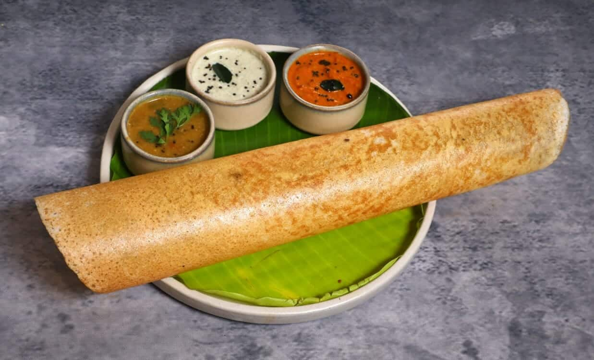

Dosa

Description of Dosa
Dosa is a tasty south indian staple breakfast recipe made with rice and urad dal. basically an extension to the traditional dosa recipe, where dosa is made crisp and stuffed with potato masala. it is perhaps one of the famous dishes from south india, which is can be served for morning breakfast or also as an evening snack with coconut chutney and sambar.
Ingredients
- 3 cup sona masuri rice
- 1/2 tsp methi
- water
- 1 cup urad dal
- 2 tbsp toor dal
- 2 tbsp chana dal
- 1 cup poha
- 1 teaspoon chilli powder
for aloo bhaji
- 2 tbsp oil
- 1 tsp mustard
- 1 tsp urad dal
- 1 tsp chana dal
- 1 dried red chilli
- few curry leaves
- 1 pinch hing
- 2 chilli finely chopped
- 1 inch ginger
- 1 onion
- 1/4 tsp turmeric
- 1 tsp salt
- 3 potatoes, boiled and mashed
- 2 tbsp coriander
- 2 tbsp lemon juice
Steps to make Masala Dosa
- firstly, in a large bowl take 3 cup sona masuri rice and ½ tsp methi.
- rinse well and soak in enough water for 4 hours.
- in another bowl take 1 cup urad dal, 2 tbsp toor dal and 2 tbsp chana dal.
- rinse well and soak in enough water for 2 hours.
- after soaking dal for 2 hours, drain off the water and transfer to the grinder. you can also grind in mixi if you do not have access to a grinder.
- Dissolve cornstarch into water, then mix into the sauce. Cook for 5 to 10 minutes, or until thickened.
- Serve over rice with naan.